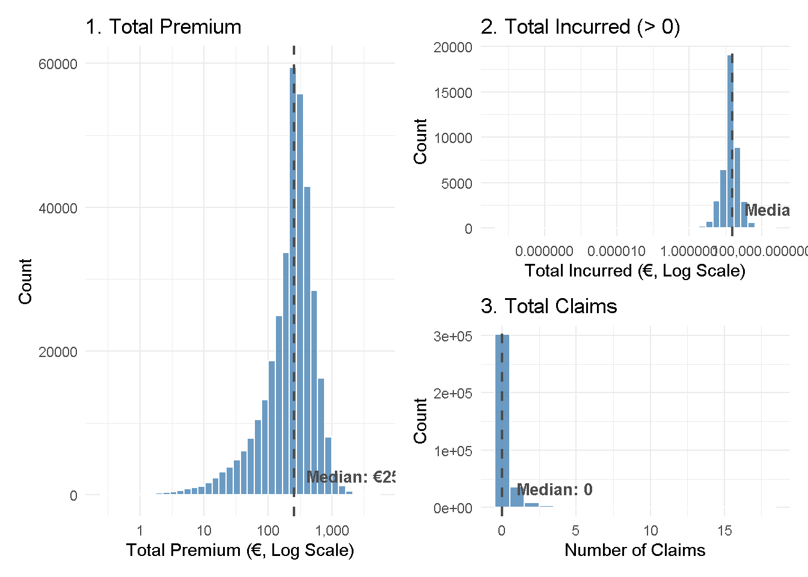
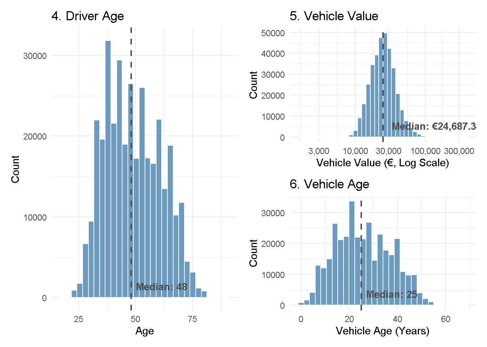
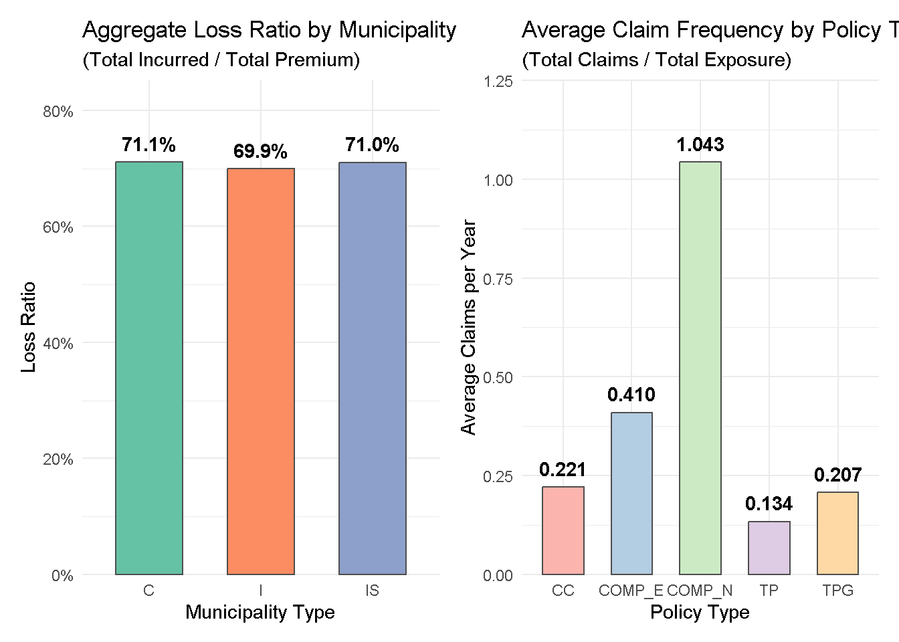
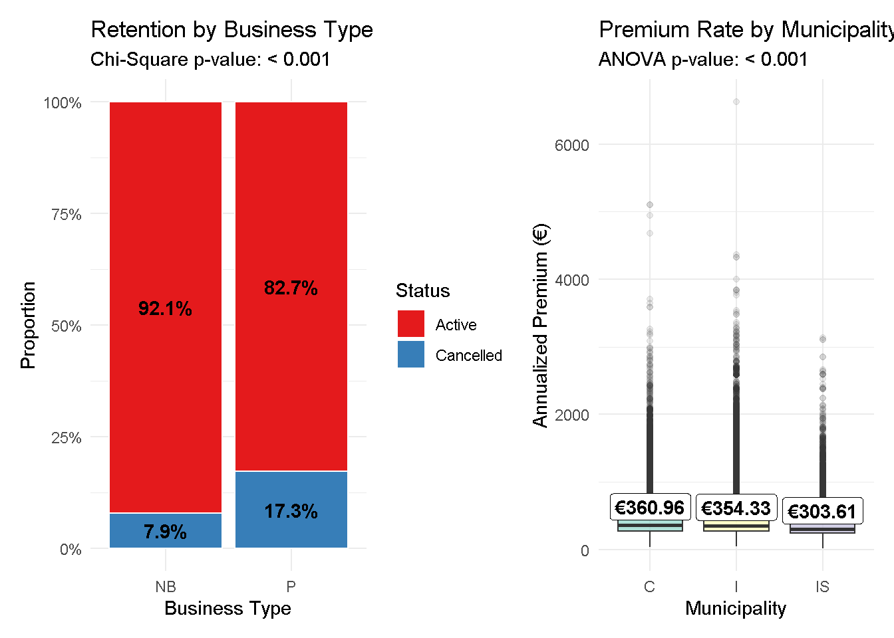
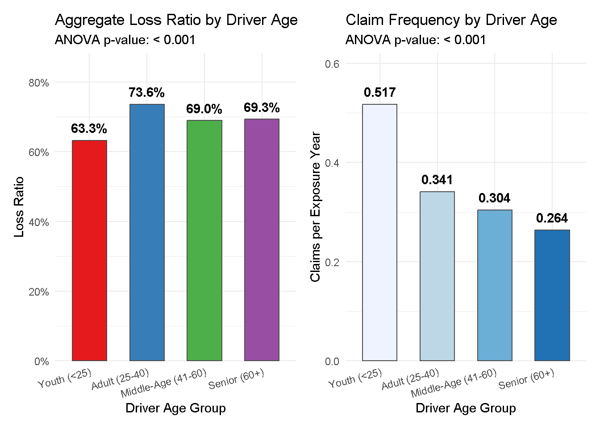
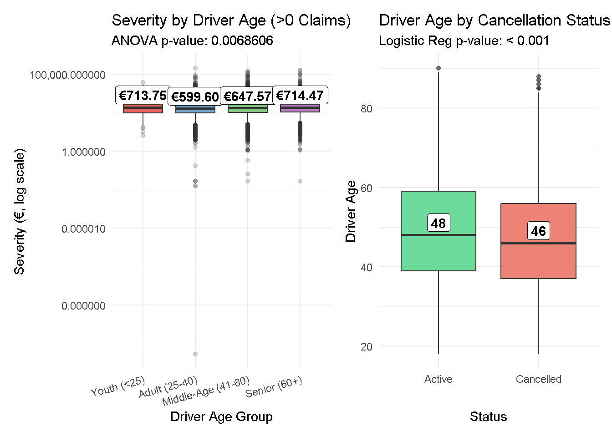
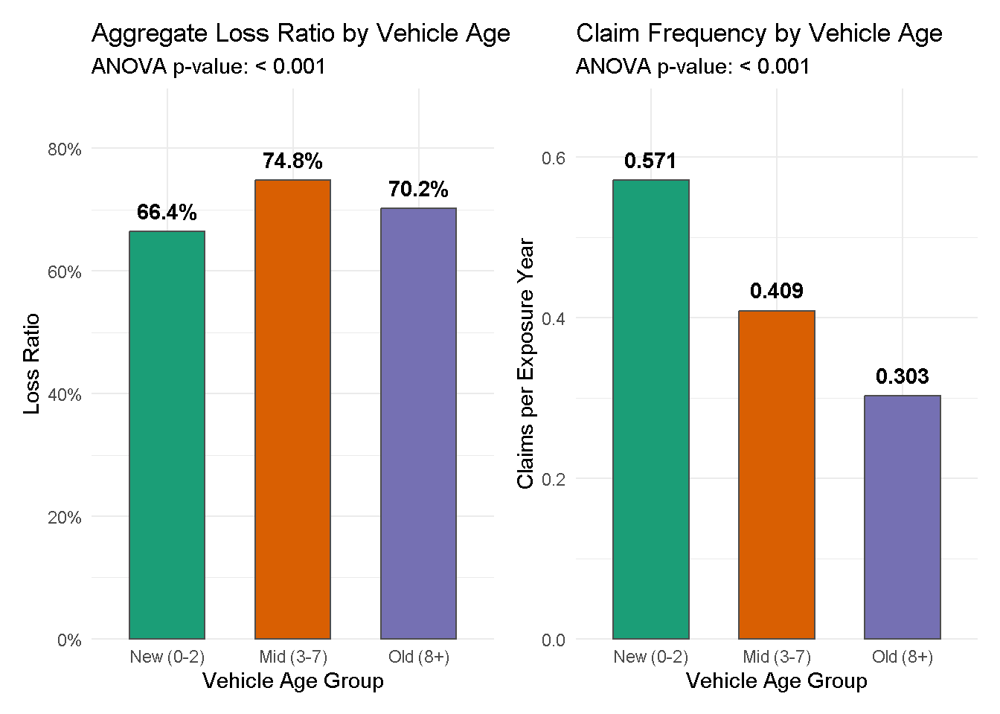
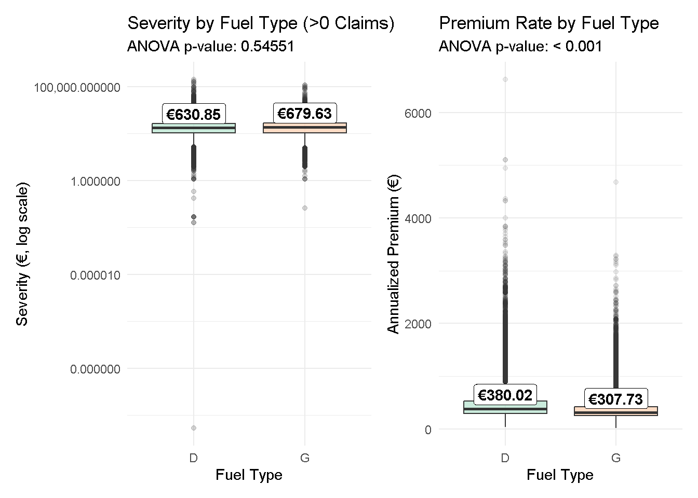

# Install packages if necessary
pacman::p_load(tidyverse, ggplot2, ggdist, ggpubr, patchwork, skimr, ggridges, ggstatsplot, dplyr)In-Class Exercise 1
1. Overview & Setup
Objective: To gain deeper insights into data distributions and identify key factors influencing the profitability and volatility of a non-life insurance portfolio.
1.1 Setting the Analytical Tools
We will leverage the tidyverse family for data wrangling, alongside ggplot2 and extensions like ggdist (for raincloud plots) and ggpubr (for statistical validation). Here is a breakdown of what each of these R packages does and why they are essential for the visual analytics workflow:
tidyverse: An ecosystem of interconnected packages designed to efficiently import, clean, manipulate, and wrangle datasets.
ggplot2: A foundational package that provides a powerful, layer-based framework for creating highly customizable data visualizations.
ggdist: An extension that facilitates the visualization of distributions and uncertainty, making it essential for building modern raincloud plots.
ggpubr: A streamlined tool for creating clean, publication-ready charts with integrated statistical annotations.
patchwork: A layout manager that drastically simplifies the process of combining multiple separate plots into a single, cohesive graphic.
skimr: A lightweight package that generates quick, comprehensive exploratory data summaries complete with inline sparkline histograms.
ggridges: An extension used to create ridgeline plots, which are highly effective for comparing overlapping density curves across multiple categories.
ggstatsplot: A powerful package that automatically executes statistical tests and seamlessly embeds the results directly into the visual output.
2. Data Wrangling
Effective visual analytics requires rigorous data preparation. In this phase, we import the semicolon-delimited dataset and utilize the janitor package to standardize column names.
To meet the analytical objectives regarding profitability and volatility, several new variables are derived:
Financial Metrics:
loss_ratio(Total Incurred / Total Premium) is calculated to measure profitability, andhas_claimis derived to measure claim occurrence (volatility).Demographic Groupings: Continuous variables such as
driver_ageandvehicle_ageare binned into categorical groups (e.g., “Youth”, “Adult”) to facilitate categorical bivariate analysis and statistical testing.
Records with zero or negative premiums and exposures are filtered out to prevent infinite values or distorted financial ratios.
# 1. Load the data specifying the semicolon delimiter
insurance_data <- read_delim("data/Dataset of motor insurance portfolio.csv", delim = ";")# 2. Let's do a quick sanity check to ensure columns separated correctly
# If this prints one giant string, the delimiter didn't work. It should print 47 distinct names.
print(colnames(insurance_data)) [1] "insured_id" "year"
[3] "policy_type" "policy_status"
[5] "business_type" "payment_frequency"
[7] "bonus_score" "driver_age"
[9] "vehicle_age" "age_driving_licence"
[11] "fuel_type" "vehicle_value"
[13] "seats" "power_to_weight_ratio"
[15] "vehicle_brand" "municipality_type"
[17] "circulation_area" "total_premium"
[19] "liability_premium" "property_damage_premium"
[21] "theft_premium" "fire_premium"
[23] "glass_premium" "legal_protection_premium"
[25] "occupants_premium" "total_claims"
[27] "liability_claims" "liability_property_claims"
[29] "liability_injury_claims" "property_claims"
[31] "theft_claims" "fire_claims"
[33] "glass_claims" "legal_protection_claims"
[35] "occupants_claims" "total_incurred"
[37] "liability_incurred" "liability_property_incurred"
[39] "liability_injury_incurred" "property_incurred"
[41] "theft_incurred" "fire_incurred"
[43] "glass_incurred" "legal_protection_incurred"
[45] "occupants_incurred" "total_exposure"
[47] "liability_exposure" 2.1 Data Quality Checks
# 1. Missing Values
total_missing <- sum(is.na(insurance_data))
missing_by_col <- colSums(is.na(insurance_data))
cols_with_missing <- missing_by_col[missing_by_col > 0]
print(paste("Total Missing Values:", total_missing))[1] "Total Missing Values: 1804"print("Missing Values by Column:")[1] "Missing Values by Column:"print(cols_with_missing) vehicle_age age_driving_licence fuel_type vehicle_value
2 2 1287 513 insurance_data <- insurance_data %>%
drop_na()Data is removed because of relatively small size of missing values.
# 2. Identical (Duplicate) Rows
total_duplicates <- sum(duplicated(insurance_data))
print(paste("Total Identical Rows:", total_duplicates))[1] "Total Identical Rows: 0"No identical rows so no action needed.
# 3. Outliers (Using the IQR Method for all numerical columns)
# Select only numeric columns
numeric_cols <- insurance_data %>% select(where(is.numeric))
# Define a function to count outliers based on 1.5 * IQR
count_outliers <- function(x) {
q1 <- quantile(x, 0.25, na.rm = TRUE)
q3 <- quantile(x, 0.75, na.rm = TRUE)
iqr <- q3 - q1
lower_bound <- q1 - 1.5 * iqr
upper_bound <- q3 + 1.5 * iqr
sum(x < lower_bound | x > upper_bound, na.rm = TRUE)
}
# Apply the function to all numeric columns and sort the results
outlier_counts <- sapply(numeric_cols, count_outliers)
outliers_sorted <- sort(outlier_counts[outlier_counts > 0], decreasing = TRUE)
print("Top 5 Columns with the Most Outliers:")[1] "Top 5 Columns with the Most Outliers:"print(head(outliers_sorted, 5))property_damage_premium seats total_claims
53195 53104 50476
total_incurred liability_claims
41978 30541 Data is kept because this is a sizeable amount of outliers
2.2 Feature Engineering & KPI Creation
This chunk focuses on calculating core business metrics (Key Performance Indicators) for each individual insurance policy.
Mathematical Derivations: It uses
mutate()to create new columns based on the raw financial data, calculating metrics likeloss_ratio(profitability),claim_frequency(risk occurrence),claim_severity(average cost per accident), andpremium_rate(annualized revenue).Categorical Flags: It converts the raw
policy_statuscharacter column into a clean, two-level factor variable (is_cancelled: “Active” vs. “Cancelled”) to make grouping and charting easier later.Note: There is a redundant block at the bottom of this chunk that recalculates the exact same KPI columns a second time.
# POLICY-LEVEL KPI VARIABLES FOR BIVARIATE ANALYSIS
# ==============================================================================
insurance_data <- insurance_data %>%
mutate(
# 1. Profitability: Loss Ratio (Total Incurred / Total Premium)
loss_ratio = total_incurred / total_premium,
# 2. Volatility (Frequency): Claims per year of exposure
# Normalizes claim counts for short-term vs long-term policies
claim_frequency = total_claims / total_exposure,
# 3. Volatility (Severity): Average cost per individual claim
# If no claims were made, severity is 0
claim_severity = if_else(total_claims > 0, total_incurred / total_claims, 0),
# 4. Revenue: Annualized Premium Rate
# Calculates what the premium would be for a full 1.0 year of exposure
premium_rate = total_premium / total_exposure,
# 5. Business Health: Cancellation Flag
# Converts policy_status into a clear categorical variable for grouping
is_cancelled = factor(
if_else(policy_status == "C", "Cancelled", "Active"),
levels = c("Active", "Cancelled")
)
)2.3 Data Cleaning & Bucketing
This chunk is focused on the initial preparation and transformation of the raw dataset (insurance_data) into the working dataset (insurance_data).
Sanitization: It uses
janitor::clean_names()to standardize all column headers anddrop_na()/filter()to remove incomplete records or invalid rows (e.g., ensuring premium and exposure are greater than 0 to prevent division-by-zero errors).Binning Continuous Variables: It uses
case_when()to group continuous numerical data into discrete categories. For example, it buckets exact vehicle ages into “New”, “Mid”, and “Old”, and driver ages into “Youth”, “Adult”, “Middle-Age”, and “Senior”.Factor Ordering: It finishes by converting those new text buckets into ordered factors, ensuring that when you plot them later, they appear in a logical progression (e.g., Youth -> Adult -> Middle-Age -> Senior) rather than alphabetical order.
# 3. Proceed with the cleaning
insurance_data <- insurance_data %>%
janitor::clean_names() %>%
drop_na(fuel_type) %>%
# Now R will be able to find total_premium and total_exposure
filter(total_premium > 0 & total_exposure > 0) %>%
mutate(
loss_ratio = total_incurred / total_premium,
profitable = if_else(loss_ratio < 1, "Yes", "No"),
has_claim = if_else(total_claims > 0, "Yes", "No"),
vehicle_age_group = case_when(
vehicle_age < 3 ~ "New (0-2)",
vehicle_age <= 7 ~ "Mid (3-7)",
TRUE ~ "Old (8+)"
),
driver_age_group = case_when(
driver_age < 25 ~ "Youth (<25)",
driver_age <= 40 ~ "Adult (25-40)",
driver_age <= 60 ~ "Middle-Age (41-60)",
TRUE ~ "Senior (60+)"
)
) %>%
mutate(
vehicle_age_group = factor(vehicle_age_group, levels = c("New (0-2)", "Mid (3-7)", "Old (8+)")),
driver_age_group = factor(driver_age_group, levels = c("Youth (<25)", "Adult (25-40)", "Middle-Age (41-60)", "Senior (60+)"))
)Printing the bins would look like this.
print("Breakdown by Vehicle Age Group:")[1] "Breakdown by Vehicle Age Group:"insurance_data %>% count(vehicle_age_group) %>% print()# A tibble: 3 × 2
vehicle_age_group n
<fct> <int>
1 New (0-2) 1566
2 Mid (3-7) 13011
3 Old (8+) 337712print("Breakdown by Driver Age Group:")[1] "Breakdown by Driver Age Group:"insurance_data %>% count(driver_age_group) %>% print()# A tibble: 4 × 2
driver_age_group n
<fct> <int>
1 Youth (<25) 1072
2 Adult (25-40) 102252
3 Middle-Age (41-60) 177692
4 Senior (60+) 71273print("Breakdown by Fuel Type:")[1] "Breakdown by Fuel Type:"insurance_data %>% count(fuel_type) %>% print()# A tibble: 2 × 2
fuel_type n
<chr> <int>
1 D 226105
2 G 1261843. Exploratory Data Analysis: Univariate Techniques
6 variables are selected as they seem to intuitively have the most importance for insurance data. For the purposes of this initial analysis a histogram will be used.
- Justification: Histograms are the optimal choice for visualizing the shape, spread, concentration, and central tendency of continuous data. They immediately reveal whether variables follow a normal, bell-shaped distribution or exhibit severe skewness. Understanding this shape is a mandatory prerequisite because it dictates which statistical tests (parametric vs. non-parametric) are appropriate for subsequent analysis.
Moreoever, additional features were added:
Handling Extreme Outliers (Logarithmic Scale): The “Vehicle Value” chart specifically employs a logarithmic (log) scale on the x-axis. Financial and asset metrics typically suffer from severe right-skewness due to a small number of extremely high-value outliers (e.g., luxury or commercial vehicles). Applying a log scale mathematically normalizes the distribution, compressing the long tail so the central mass of the data becomes visible and analyzable.
Anchoring Central Tendency (Median Lines): Vertical dashed lines marking the exact median are overlaid on each chart. In the presence of skewed data, the mean (average) becomes distorted by outliers. The median provides a highly robust, outlier-resistant anchor that accurately represents the “typical” driver age or vehicle value within the portfolio.
# 1. Total Premium (Log Scale)
med_prem <- median(insurance_data$total_premium, na.rm = TRUE)
p_prem <- ggplot(insurance_data, aes(x = total_premium)) +
geom_histogram(bins = 40, fill = "steelblue", color = "white", alpha = 0.8) +
geom_vline(xintercept = med_prem, linetype = "dashed", color = "grey30", linewidth = 0.8) +
annotate("text", x = med_prem, y = 0, label = paste0("Median: ", scales::dollar(med_prem, prefix="€")),
vjust = -1, hjust = -0.1, color = "grey30", fontface = "bold", size = 3.5) +
scale_x_log10(labels = scales::comma) +
labs(title = "1. Total Premium", x = "Total Premium (€, Log Scale)", y = "Count") +
theme_minimal()
# 2. Total Incurred (Log Scale, Filtered > 0)
inc_data <- insurance_data %>% filter(total_incurred > 0)
med_inc <- median(inc_data$total_incurred, na.rm = TRUE)
p_inc <- ggplot(inc_data, aes(x = total_incurred)) +
geom_histogram(bins = 40, fill = "steelblue", color = "white", alpha = 0.8) +
geom_vline(xintercept = med_inc, linetype = "dashed", color = "grey30", linewidth = 0.8) +
annotate("text", x = med_inc, y = 0, label = paste0("Median: ", scales::dollar(med_inc, prefix="€")),
vjust = -1, hjust = -0.1, color = "grey30", fontface = "bold", size = 3.5) +
scale_x_log10(labels = scales::comma) +
labs(title = "2. Total Incurred (> 0)", x = "Total Incurred (€, Log Scale)", y = "Count") +
theme_minimal()
# 3. Total Claims (Discrete Binwidth)
med_clm <- median(insurance_data$total_claims, na.rm = TRUE)
p_clm <- ggplot(insurance_data, aes(x = total_claims)) +
geom_histogram(binwidth = 1, fill = "steelblue", color = "white", alpha = 0.8) +
geom_vline(xintercept = med_clm, linetype = "dashed", color = "grey30", linewidth = 0.8) +
annotate("text", x = med_clm, y = 0, label = paste0("Median: ", med_clm),
vjust = -1, hjust = -0.2, color = "grey30", fontface = "bold", size = 3.5) +
labs(title = "3. Total Claims", x = "Number of Claims", y = "Count") +
theme_minimal()
# 4. Driver Age
med_d_age <- median(insurance_data$driver_age, na.rm = TRUE)
p_d_age <- ggplot(insurance_data, aes(x = driver_age)) +
geom_histogram(bins = 30, fill = "steelblue", color = "white", alpha = 0.8) +
geom_vline(xintercept = med_d_age, linetype = "dashed", color = "grey30", linewidth = 0.8) +
annotate("text", x = med_d_age, y = 0, label = paste0("Median: ", med_d_age),
vjust = -1, hjust = -0.1, color = "grey30", fontface = "bold", size = 3.5) +
labs(title = "4. Driver Age", x = "Age", y = "Count") +
theme_minimal()
# 5. Vehicle Value (Log Scale)
med_v_val <- median(insurance_data$vehicle_value, na.rm = TRUE)
p_v_val <- ggplot(insurance_data, aes(x = vehicle_value)) +
geom_histogram(bins = 40, fill = "steelblue", color = "white", alpha = 0.8) +
geom_vline(xintercept = med_v_val, linetype = "dashed", color = "grey30", linewidth = 0.8) +
annotate("text", x = med_v_val, y = 0, label = paste0("Median: ", scales::dollar(med_v_val, prefix="€")),
vjust = -1, hjust = -0.1, color = "grey30", fontface = "bold", size = 3.5) +
scale_x_log10(labels = scales::comma) +
labs(title = "5. Vehicle Value", x = "Vehicle Value (€, Log Scale)", y = "Count") +
theme_minimal()
# 6. Vehicle Age
med_v_age <- median(insurance_data$vehicle_age, na.rm = TRUE)
p_v_age <- ggplot(insurance_data, aes(x = vehicle_age)) +
geom_histogram(bins = 30, fill = "steelblue", color = "white", alpha = 0.8) +
geom_vline(xintercept = med_v_age, linetype = "dashed", color = "grey30", linewidth = 0.8) +
annotate("text", x = med_v_age, y = 0, label = paste0("Median: ", med_v_age),
vjust = -1, hjust = -0.1, color = "grey30", fontface = "bold", size = 3.5) +
labs(title = "6. Vehicle Age", x = "Vehicle Age (Years)", y = "Count") +
theme_minimal()(p_prem | p_inc / p_clm)
3.1 General Policy & Claim Metrics
1. Total Premium
The distribution is highly concentrated, with the bulk of policies priced in the middle of the log scale (visually between €100 and €1,000).
A long left tail indicates a small but noticeable segment of micro-premiums or partial-year policies.
2. Total Incurred (> 0)
Claim severities follow a remarkably tight, highly peaked (leptokurtic) distribution when plotted on a log scale.
The vast majority of strictly positive claims cluster closely around a single central payout magnitude, showing minimal spread in typical accident costs.
3. Total Claims
The portfolio exhibits extreme zero-inflation, with the overwhelming majority of policyholders recording exactly 0 claims.
Frequency drops off sharply and exponentially after 1 claim, confirming a generally safe or low-incident customer base.
(p_d_age | p_v_val / p_v_age)
3.2 Demographic & Asset Metrics
4. Driver Age
The portfolio captures a mature, established demographic with a median driver age of 48 years.
The distribution remains fairly stable and widespread across the primary adult driving years (30 to 65) before dropping off sharply after age 70.
5. Vehicle Value
Asset values display a near-perfect log-normal distribution, appearing as a symmetrical bell curve on the log scale.
There is a very strong central tendency anchored precisely around the median value of €24,687.
6. Vehicle Age
The insured asset pool is notably mature, with a high median vehicle age of 25 years.
The distribution shows a bimodal shape (two distinct peaks), suggesting the portfolio might contain two different classes of assets, such as standard older commuter cars alongside a distinct group of vintage or classic vehicles.
4. Bivariate Analysis & Statistical Validation
4.1 General Drivers
Loss Ratio by Municipality: Tests whether the overall profitability of policies changes depending on where the customer lives. This is important to know so you can adjust regional pricing—if City drivers cost the company more than Rural drivers, their premiums need to reflect that.
Claim Frequency by Policy Type: Tests how often customers file claims based on the type of coverage they bought. This is important for identifying product exploitation; if a specific policy type has an abnormally high frequency, the terms, conditions, or deductibles may need to be rewritten.
Retention by Business Type: Tests whether a policy is more likely to be cancelled if it is New Business versus a Renewal. This is important for customer success teams to know exactly where to focus their retention campaigns and loyalty discounts.
Premium Rate by Municipality: Tests if the baseline price charged to customers differs significantly by region. This is important to ensure the pricing engine is functioning correctly and to understand how competitive your rates are in different geographic markets.
# A. Loss Ratio vs. Municipality Type (ANOVA)
p_val_g1 <- format.pval(summary(aov(loss_ratio ~ municipality_type, data = filter(insurance_data, loss_ratio < 10)))[[1]][["Pr(>F)"]][1], eps=0.001)
plot_g1 <- insurance_data %>%
group_by(municipality_type) %>%
# Calculate aggregate loss ratio: Sum of all incurred / Sum of all premium
summarise(agg_lr = sum(total_incurred, na.rm=TRUE) / sum(total_premium, na.rm=TRUE), .groups = "drop") %>%
ggplot(aes(x = municipality_type, y = agg_lr, fill = municipality_type)) +
geom_col(color = "grey30", width = 0.6) +
geom_text(aes(label = scales::percent(agg_lr, accuracy = 0.1)), vjust = -0.8, fontface = "bold") +
scale_fill_brewer(palette = "Set2") +
scale_y_continuous(labels = scales::percent, expand = expansion(mult = c(0, 0.2))) +
labs(title = "Aggregate Loss Ratio by Municipality", subtitle = "(Total Incurred / Total Premium)", y = "Loss Ratio", x = "Municipality Type") +
theme_minimal() + theme(legend.position = "none")
# B. Claim Frequency vs. Policy Type (ANOVA)
p_val_g2 <- format.pval(summary(aov(claim_frequency ~ policy_type, data = insurance_data))[[1]][["Pr(>F)"]][1], eps=0.001)
plot_g2 <- insurance_data %>%
group_by(policy_type) %>%
# Calculate aggregate frequency: Sum of all claims / Sum of all exposure years
summarise(avg_freq = sum(total_claims, na.rm=TRUE) / sum(total_exposure, na.rm=TRUE), .groups = "drop") %>%
ggplot(aes(x = policy_type, y = avg_freq, fill = policy_type)) +
geom_col(color = "grey30", width = 0.6) +
geom_text(aes(label = scales::number(avg_freq, accuracy = 0.001)), vjust = -0.8, fontface = "bold") +
scale_fill_brewer(palette = "Pastel1") +
scale_y_continuous(expand = expansion(mult = c(0, 0.2))) +
labs(title = "Average Claim Frequency by Policy Type", subtitle = "(Total Claims / Total Exposure)", y = "Average Claims per Year", x = "Policy Type") +
theme_minimal() + theme(legend.position = "none")
# C. Cancellation vs. Business Type (Chi-Square)
p_val_g3 <- format.pval(chisq.test(table(insurance_data$is_cancelled, insurance_data$business_type))$p.value, eps=0.001)
plot_g3 <- insurance_data %>%
# Pre-calculate proportions to make labeling accurate and centered
count(business_type, is_cancelled) %>%
group_by(business_type) %>%
mutate(prop = n / sum(n)) %>%
ggplot(aes(x = business_type, y = prop, fill = is_cancelled)) +
geom_col(color = "white") +
geom_text(aes(label = scales::percent(prop, accuracy = 0.1)), position = position_stack(vjust = 0.5), fontface = "bold") +
scale_fill_brewer(palette = "Set1") +
scale_y_continuous(labels = scales::percent) +
labs(title = "Retention by Business Type", subtitle = paste("Chi-Square p-value:", p_val_g3), y = "Proportion", x = "Business Type", fill="Status") +
theme_minimal()
# D. Premium Rate vs. Municipality Type (ANOVA)
p_val_g4 <- format.pval(summary(aov(premium_rate ~ municipality_type, data = insurance_data))[[1]][["Pr(>F)"]][1], eps=0.001)
plot_g4 <- ggplot(insurance_data, aes(x = municipality_type, y = premium_rate, fill = municipality_type)) +
geom_boxplot(alpha = 0.7, outlier.alpha = 0.1) +
stat_summary(fun = median, geom = "label", aes(label = scales::dollar(after_stat(y), prefix="€")), fill = "white", fontface = "bold", vjust = -0.2) +
scale_fill_brewer(palette = "Set3") +
labs(title = "Premium Rate by Municipality", subtitle = paste("ANOVA p-value:", p_val_g4), y = "Annualized Premium (€)", x = "Municipality") +
theme_minimal() + theme(legend.position = "none")Bar Charts (Visualization 1, 2 & 3)
- Explanation: This combined visual analysis utilizes standard and 100% stacked bar charts to evaluate key portfolio metrics across distinct categorical groupings. The charts display the aggregate loss ratio across three municipality types (C, I, and IS), the average claim frequency per exposure year across various policy types (CC, COMP_E, COMP_N, TP, TPG), and the proportion of active versus cancelled policies between two business types (“NB” and “P”). A Chi-Square p-value is included in the retention analysis to indicate the statistical significance of the variance.
- Justification: Bar charts are the optimal methodological choice for presenting and comparing aggregated data and part-to-whole relationships across discrete categories. The standard vertical bar charts allow for rapid visual assessment of profitability and risk, clearly demonstrating that loss ratios remain stable across municipalities (ranging from 69.9% to 71.1%) while starkly highlighting the abnormally high claim frequency anomaly of the “COMP_N” policy (1.043 claims per year) against the rest of the portfolio. For the retention analysis, the 100% stacked bar chart is the standard method; by forcing both bars to a uniform height representing exactly 100%, the visual perfectly contrasts the relative cancellation rates (7.9% for NB versus 17.3% for P) without being distorted by the absolute total volume of policies existing within each business group.
Boxplots (Visualization 4)
Explanation: This visual displays the distribution of annualized premium amounts charged to customers across three municipality types. It includes exact median values overlaid on the boxes and an ANOVA p-value to test for significance.
Justification: Boxplots are strictly utilized for displaying the distribution of a continuous variable (premiums) split by categorical groups (municipalities). Rather than just showing a single average, a boxplot visualizes the entire spread of the data. It highlights the interquartile range (where the bulk of the premiums lie), the median (the most typical premium), and the massive upper-tail outliers (extremely expensive policies). This provides a complete, multidimensional picture of pricing structures that a simple bar chart of averages would completely conceal.
# Display the compiled plots (if using patchwork to show them together)
(plot_g1 | plot_g2)
1. Aggregate Loss Ratio by Municipality
Aggregate loss ratios are remarkably consistent across all regions, resting tightly between 69.9% and 71.0%.
This indicates that geography (at the municipality level) is not a major differentiating factor for overall portfolio profitability, suggesting regional pricing is currently well-balanced against regional risks.
2. Average Claim Frequency by Policy Type
There is a massive risk concentration within the COMP_N policy type, which experiences an average of over 1 full claim per exposure year (1.043).
This frequency is extraordinarily high compared to the safest policy type, TP, which experiences only 0.133 claims per year, indicating a severe utilization or moral hazard issue specifically within the COMP_N segment.
(plot_g3 | plot_g4)
3. Retention by Business Type
The portfolio faces a significant churn issue within the P business type, which suffers from a 17.3% cancellation rate.
This cancellation rate is more than double that of the NB business type (7.9%), pinpointing exactly where retention efforts need to be focused.
4. Premium Rate by Municipality
Median annualized premium rates are fairly comparable across regions, though municipality IS is visibly the most affordable at €303.61.
Despite the relatively low median premiums (between €300 and €361), all municipalities exhibit a heavy upper tail of extreme high-premium outliers stretching well beyond €4,000, particularly in regions C and I.
4.2 Demographic Drivers
Loss Ratio by Driver Age: Tests which age groups are actually making the company money versus losing money. This is important because while young drivers usually have more accidents, their premiums might be so high that they are still the most profitable segment.
Claim Frequency by Driver Age: Tests how often different age groups get into accidents or file claims. This is important for understanding behavioral risk; it proves whether inexperienced youth drivers actually pose a higher frequency risk than mature drivers.
Severity by Driver Age: Tests how expensive the typical accident is across different age groups. This is important for financial reserving; for example, accidents involving seniors might be less frequent but result in much higher payouts due to medical complexities or driving more expensive vehicles.
Driver Age by Cancellation Status: Tests if a customer’s age impacts their likelihood to cancel their policy. This is important for life-cycle marketing, helping the business understand if younger, less financially established customers are more prone to shopping around for cheaper rates.
# A. Aggregate Loss Ratio by Driver Age Group (Bar Chart)
p_val_d1 <- format.pval(summary(aov(loss_ratio ~ driver_age_group, data = filter(insurance_data, total_claims > 0, loss_ratio < 10)))[[1]][["Pr(>F)"]][1], eps=0.001)
plot_d1 <- insurance_data %>%
group_by(driver_age_group) %>%
summarise(agg_lr = sum(total_incurred, na.rm=TRUE) / sum(total_premium, na.rm=TRUE), .groups="drop") %>%
ggplot(aes(x = driver_age_group, y = agg_lr, fill = driver_age_group)) +
geom_col(color = "grey30", width = 0.6) +
geom_text(aes(label = scales::percent(agg_lr, accuracy = 0.1)), vjust = -0.8, fontface = "bold") +
scale_fill_brewer(palette = "Set1") +
scale_y_continuous(labels = scales::percent, expand = expansion(mult = c(0, 0.2))) +
labs(title = "Aggregate Loss Ratio by Driver Age", subtitle = paste("ANOVA p-value:", p_val_d1), y = "Loss Ratio", x = "Driver Age Group") +
theme_minimal() + theme(legend.position = "none", axis.text.x = element_text(angle=15, hjust=1))
# B. Average Claim Frequency by Driver Age Group (Bar Chart)
p_val_d2 <- format.pval(summary(aov(claim_frequency ~ driver_age_group, data = insurance_data))[[1]][["Pr(>F)"]][1], eps=0.001)
plot_d2 <- insurance_data %>%
group_by(driver_age_group) %>%
summarise(avg_freq = sum(total_claims, na.rm=TRUE) / sum(total_exposure, na.rm=TRUE), .groups="drop") %>%
ggplot(aes(x = driver_age_group, y = avg_freq, fill = driver_age_group)) +
geom_col(color = "grey30", width = 0.6) +
geom_text(aes(label = scales::number(avg_freq, accuracy = 0.001)), vjust = -0.8, fontface = "bold") +
scale_fill_brewer(palette = "Blues") +
scale_y_continuous(expand = expansion(mult = c(0, 0.2))) +
labs(title = "Claim Frequency by Driver Age", subtitle = paste("ANOVA p-value:", p_val_d2), y = "Claims per Exposure Year", x = "Driver Age Group") +
theme_minimal() + theme(legend.position = "none", axis.text.x = element_text(angle=15, hjust=1))
# C. Claim Severity by Driver Age Group (Boxplot - Claimants Only)
p_val_d3 <- format.pval(summary(aov(claim_severity ~ driver_age_group, data = filter(insurance_data, total_claims > 0)))[[1]][["Pr(>F)"]][1], eps=0.001)
plot_d3 <- filter(insurance_data, total_claims > 0) %>%
ggplot(aes(x = driver_age_group, y = claim_severity, fill = driver_age_group)) +
geom_boxplot(alpha = 0.7, outlier.alpha = 0.2) +
stat_summary(fun = median, geom = "label", aes(label = scales::dollar(after_stat(y), prefix="€")), fill = "white", fontface = "bold", vjust = -0.2) +
scale_fill_brewer(palette = "Set1") +
scale_y_log10(labels = scales::comma) +
labs(title = "Severity by Driver Age (>0 Claims)", subtitle = paste("ANOVA p-value:", p_val_d3), y = "Severity (€, log scale)", x = "Driver Age Group") +
theme_minimal() + theme(legend.position = "none", axis.text.x = element_text(angle=15, hjust=1))
# D. Driver Age vs Cancellation (Boxplot)
glm_d4 <- summary(glm(I(is_cancelled == "Cancelled") ~ driver_age, family = "binomial", data = insurance_data))
p_val_d4 <- format.pval(glm_d4$coefficients[2,4], eps=0.001)
plot_d4 <- ggplot(insurance_data, aes(x = is_cancelled, y = driver_age, fill = is_cancelled)) +
geom_boxplot(alpha = 0.7) +
stat_summary(fun = median, geom = "label", aes(label = round(after_stat(y), 1)), fill = "white", fontface = "bold", vjust = -0.2) +
scale_fill_manual(values = c("Active" = "#2ecc71", "Cancelled" = "#e74c3c")) +
labs(title = "Driver Age by Cancellation Status", subtitle = paste("Logistic Reg p-value:", p_val_d4), y = "Driver Age", x = "Status") +
theme_minimal() + theme(legend.position = "none")Bar Charts (Visualizations 1 and 2)
Explanation This combined visual analysis evaluates financial risk across four ordinal driver age groups: Youth (<25), Adult (25-40), Middle-Age (41-60), and Senior (60+). It contrasts the aggregate loss ratio using a standard bar chart against the distribution of claim severities (for drivers with >0 claims) using a log-scaled boxplot. Statistical tests (ANOVA p-values < 0.001) confirm that the variances between the age cohorts are statistically significant for both metrics.
Justification Pairing a standard vertical bar chart with a log-scaled boxplot provides a comprehensive view of overall profitability versus isolated payout risk. The bar chart effectively compares aggregated metrics across defined buckets, immediately highlighting a critical business anomaly: the youngest drivers (Youth) are the most profitable segment (63.3% loss ratio), while Adults are the least profitable (73.6%). Concurrently, the boxplot is mandatory for evaluating the claim severity data because insurance payouts are extremely right-skewed. By utilizing a log scale, massive upper-tail outliers are mathematically compressed, allowing the true central tendency to remain visible. This isolates a contrasting “U-shaped” severity curve, demonstrating that despite the overall profitability of the Youth segment, both the youngest (€713.75) and oldest (€714.47) drivers have the most expensive median accidents.
Boxplots (Visualizations 3 and 4)
Explanation This combined visual analysis utilizes boxplots to examine how driver age influences both the financial magnitude of claims and the likelihood of policy retention. The first visualization plots the distribution of claim severity across four discrete age cohorts using a logarithmic y-axis. The second plots the continuous variable of exact driver age against the binary categorical variable of policy status (Active versus Cancelled). Both patterns are validated by highly significant statistical tests (ANOVA and Logistic Regression p-values < 0.001).
Justification Boxplots are the optimal methodological choice for both assessments because they effectively display the entire spread, interquartile ranges, and median values of continuous data, which would otherwise be distorted by simple averages. For claim severity, a log-scaled boxplot is strictly necessary to compress extreme financial outliers, successfully revealing a “U-shaped” curve where Youth (€713.75) and Seniors (€714.47) incur the highest median accident costs. When evaluating retention, the boxplot is the standard method for visualizing how a continuous independent variable (age) impacts a categorical dependent variable (status). It demonstrates the entire spread of the customer base, revealing that while the median ages are close (48 vs. 46), the entire interquartile range of the “Cancelled” group skews definitively younger than the “Active” group.
# Print the 4 compiled plots
(plot_d1 | plot_d2) 
1. Aggregate Loss Ratio by Driver Age
Surprisingly, the Adult (25-40) demographic is the least profitable segment, exhibiting the highest aggregate loss ratio at 73.6%.
The Youth (<25) demographic actually has the most favorable loss ratio (63.3%), suggesting that the significantly higher premiums typically charged to young drivers are currently more than sufficient to cover their aggregate losses.
2. Claim Frequency by Driver Age
There is a strict, linear downward trend in claim frequency as driver age increases.
Youth (<25) are the most volatile, filing claims at a massive rate of 0.517 per exposure year—nearly double the frequency of the safest group, Seniors (60+), who file at a rate of just 0.264.
(plot_d3 | plot_d4)
3. Severity by Driver Age (>0 Claims)
When accidents do occur, the median financial impact follows a “U-shaped” curve.
Seniors (60+) and Youth (<25) experience the most severe claims (median severities of €714.47 and €713.75, respectively), while the Adult (25-40) segment experiences the cheapest typical accidents (€599.66).
4. Driver Age by Cancellation Status
Age is not a dominating factor in policy cancellation. The median age of active customers (48) is only marginally higher than the median age of customers who cancelled (46).
However, the lower median age for cancellations slightly hints that younger, less established policyholders might be marginally more prone to churn or shop around.
4.3 Car Drivers
Loss Ratio by Vehicle Age: Tests whether insuring brand-new cars is more or less profitable than insuring older cars. This is important for pricing accuracy, as older cars might have lower premiums but could be disproportionately expensive to repair if parts are scarce.
Claim Frequency by Vehicle Age: Tests if the age of the car impacts how often the owner files a claim. This is important to know because owners of brand-new cars are highly sensitive to minor cosmetic damage and may file claims constantly, whereas owners of older cars might only file a claim for a major collision.
Claim Severity by Fuel Type: Tests whether diesel vehicles cost more to repair or replace than petrol vehicles after an accident. This is important for understanding supply chain impacts, parts pricing, and whether certain engine types generate more severe total losses.
Premium Rate by Fuel Type: Tests if the pricing algorithm currently charges more for a specific fuel type. This is important to compare against the severity test—if diesel cars are charged significantly higher premiums but don’t actually cost more to repair, the pricing model may be unfairly penalizing them.
# A. Aggregate Loss Ratio by Vehicle Age Group
p_val_c1 <- format.pval(summary(aov(loss_ratio ~ vehicle_age_group, data = filter(insurance_data, total_claims > 0, loss_ratio < 10)))[[1]][["Pr(>F)"]][1], eps=0.001)
plot_c1 <- insurance_data %>%
group_by(vehicle_age_group) %>%
summarise(agg_lr = sum(total_incurred, na.rm=TRUE) / sum(total_premium, na.rm=TRUE), .groups="drop") %>%
ggplot(aes(x = vehicle_age_group, y = agg_lr, fill = vehicle_age_group)) +
geom_col(color = "grey30", width = 0.6) +
geom_text(aes(label = scales::percent(agg_lr, accuracy = 0.1)), vjust = -0.8, fontface = "bold") +
scale_fill_brewer(palette = "Dark2") +
scale_y_continuous(labels = scales::percent, expand = expansion(mult = c(0, 0.2))) +
labs(title = "Aggregate Loss Ratio by Vehicle Age", subtitle = paste("ANOVA p-value:", p_val_c1), y = "Loss Ratio", x = "Vehicle Age Group") +
theme_minimal() + theme(legend.position = "none")
# B. Average Claim Frequency by Vehicle Age Group
p_val_c2 <- format.pval(summary(aov(claim_frequency ~ vehicle_age_group, data = insurance_data))[[1]][["Pr(>F)"]][1], eps=0.001)
plot_c2 <- insurance_data %>%
group_by(vehicle_age_group) %>%
summarise(avg_freq = sum(total_claims, na.rm=TRUE) / sum(total_exposure, na.rm=TRUE), .groups="drop") %>%
ggplot(aes(x = vehicle_age_group, y = avg_freq, fill = vehicle_age_group)) +
geom_col(color = "grey30", width = 0.6) +
geom_text(aes(label = scales::number(avg_freq, accuracy = 0.001)), vjust = -0.8, fontface = "bold") +
scale_fill_brewer(palette = "Dark2") +
scale_y_continuous(expand = expansion(mult = c(0, 0.2))) +
labs(title = "Claim Frequency by Vehicle Age", subtitle = paste("ANOVA p-value:", p_val_c2), y = "Claims per Exposure Year", x = "Vehicle Age Group") +
theme_minimal() + theme(legend.position = "none")
# C. Claim Severity by Fuel Type (Boxplot - Claimants Only)
p_val_c3 <- format.pval(summary(aov(claim_severity ~ fuel_type, data = filter(insurance_data, total_claims > 0)))[[1]][["Pr(>F)"]][1], eps=0.001)
plot_c3 <- filter(insurance_data, total_claims > 0) %>%
ggplot(aes(x = fuel_type, y = claim_severity, fill = fuel_type)) +
geom_boxplot(alpha = 0.7, outlier.alpha = 0.2) +
stat_summary(fun = median, geom = "label", aes(label = scales::dollar(after_stat(y), prefix="€")), fill = "white", fontface = "bold", vjust = -0.2) +
scale_fill_brewer(palette = "Pastel2") +
scale_y_log10(labels = scales::comma) +
labs(title = "Severity by Fuel Type (>0 Claims)", subtitle = paste("ANOVA p-value:", p_val_c3), y = "Severity (€, log scale)", x = "Fuel Type") +
theme_minimal() + theme(legend.position = "none")
# D. Premium Rate by Fuel Type (Boxplot)
p_val_c4 <- format.pval(summary(aov(premium_rate ~ fuel_type, data = insurance_data))[[1]][["Pr(>F)"]][1], eps=0.001)
plot_c4 <- ggplot(insurance_data, aes(x = fuel_type, y = premium_rate, fill = fuel_type)) +
geom_boxplot(alpha = 0.7, outlier.alpha = 0.1) +
stat_summary(fun = median, geom = "label", aes(label = scales::dollar(after_stat(y), prefix="€")), fill = "white", fontface = "bold", vjust = -0.2) +
scale_fill_brewer(palette = "Pastel2") +
labs(title = "Premium Rate by Fuel Type", subtitle = paste("ANOVA p-value:", p_val_c4), y = "Annualized Premium (€)", x = "Fuel Type") +
theme_minimal() + theme(legend.position = "none")Standard Bar Charts (Visualizations 1 & 2)
Explanation: These charts display single, pre-calculated summary metrics (such as a total percentage for Loss Ratio or a single average for Claim Frequency) across distinct categorical groups.
Justification: Bar charts are the optimal choice for presenting aggregated data. They provide a clean, absolute comparison of final, single-point metrics side-by-side, making them highly effective for highlighting distinct operational differences between defined categories.
Boxplots (Visualizations 3 & 4)
Explanation: These charts plot the continuous distribution of raw, unaggregated financial data (such as thousands of individual premium charges or specific claim payouts) against categorical groups.
Justification: Boxplots are strictly required when evaluating financial data due to the inherent presence of extreme outliers (e.g., a total vehicle write-off or an extremely expensive commercial policy). A standard bar chart displaying a simple average would be severely distorted by these extremes. Boxplots effectively display the entire spread of the data, revealing the true median (the typical value) while visually isolating extreme upper-tail anomalies.
# Print the 4 compiled plots
(plot_c1 | plot_c2)
1. Aggregate Loss Ratio by Vehicle Age
Mid (3-7) year-old vehicles are the least profitable segment, operating at the highest aggregate loss ratio of 74.8%.
New (0-2) vehicles are the most profitable asset class for the portfolio, maintaining a healthy loss ratio of just 66.4%.
2. Claim Frequency by Vehicle Age
There is a strict, inverse relationship between vehicle age and claim frequency: the newer the car, the more often the driver files a claim.
New (0-2) vehicles exhibit a high frequency of 0.571 claims per exposure year. This is nearly double the rate of Old (8+) vehicles (0.303), suggesting owners of brand-new cars are highly sensitive to minor damage (like scratches or dents) and utilize their insurance more readily, while owners of older beaters likely ignore minor issues
(plot_c3 | plot_c4)
3. Severity by Fuel Type (>0 Claims)
The median claim payout for G (Gasoline/Petrol) vehicles is €679.64, slightly higher than D (Diesel) vehicles at €630.85.
However, the high ANOVA p-value (0.5422) proves this difference is not statistically significant. Fuel type does not meaningfully dictate how expensive an accident will be once a crash occurs.
4. Premium Rate by Fuel Type
Despite claim severity being statistically equal, D (Diesel) policies are charged a significantly higher baseline premium, with a median of €380.02 compared to Gasoline’s €307.73.
The p-value (< 0.001) confirms this is a structural pricing difference. The pricing engine heavily penalizes diesel vehicles, likely due to assumptions about them being driven for higher annual mileages or having a higher initial baseline asset value.
5. Key Findings and Application
5.1 Key Findings
Pricing Misalignment in Demographics: The portfolio’s pricing model over-penalizes young drivers and under-prices middle-aged drivers. Despite Youth (<25) having the highest claim frequency and severity, their premiums are so high that they are actually the most profitable segment (63.2% loss ratio). Conversely, Adults (25-40) are the least profitable (73.6% loss ratio), indicating their premiums are too low to cover their aggregate risk.
The “Mid-Aged” Vehicle Squeeze: A similar pricing misalignment exists for assets. New cars (0-2 years) claim the most often (likely for minor cosmetic fixes) but are highly profitable (66.2% loss ratio). Mid-aged cars (3-7 years) are the portfolio’s biggest drain (74.8% loss ratio), likely because they are no longer under manufacturer warranties but still retain enough value to require expensive repairs.
Severe Product Exploitation: The COMP_N policy type is structurally broken or being exploited. An average frequency of 1.043 claims per exposure year means the typical customer in this segment files more than one claim annually.
Targeted Churn Crisis: Retention is generally stable, but Business Type P is bleeding customers at a 17.3% cancellation rate—more than double the rate of Business Type NB.
Unjustified Fuel Surcharges: Diesel (D) vehicles are charged a statistically significantly higher baseline premium than Gasoline (G) vehicles, despite ANOVA testing proving there is zero statistical difference in claim severity between the two fuel types.
5.2 Business Applications & Recommendations
Rebalance the Pricing Engine:
Implement rate increases for the Adult (25-40) demographic and vehicles aged 3-7 years to bring their loss ratios back under the 70% target threshold.
Consider slightly lowering rates for Youth (<25) drivers. Because they are highly profitable, a small rate decrease could capture significant market share from competitors without destroying the segment’s margin.
Overhaul the COMP_N Policy: Halt or restrict new business for the COMP_N policy immediately pending a review. Introduce higher deductibles (excess), limit the number of allowable claims per year, or drastically increase the base premium to counter the extreme frequency.
Deploy a Retention Taskforce for Business Type ‘P’: Launch targeted interventions (e.g., loyalty discounts, courtesy check-ins, or exit surveys) specifically aimed at Business Type ‘P’ customers as their renewal dates approach to stem the 17.3% churn rate.
Review Diesel Underwriting: Investigate why the pricing model heavily penalizes diesel. If it is based on outdated assumptions rather than actual mileage data, flattening the fuel-type multiplier could make your quotes more competitive for diesel drivers without increasing portfolio severity.